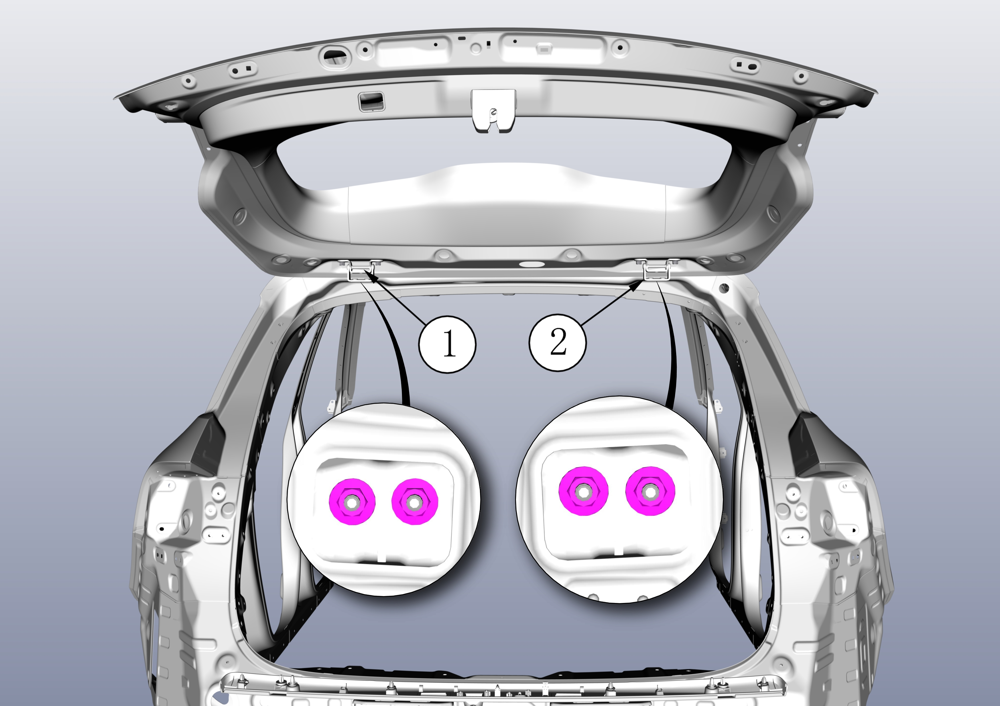

拆卸
拆卸背门背门驱动机构撑杆总成，参见 拆卸和安装背门驱动机构撑杆总成 ；
旋出背门铰链（背门侧）固定螺栓，工具：套筒（13），螺栓拧紧力矩 23±2.5N.m，拆卸背门；
拆卸 C 柱上饰板总成，参见 拆卸与安装C柱装饰板 ；
脱开顶棚后端固定卡扣，参见 拆卸与安装顶盖内衬 ；
旋出背门铰链（顶盖侧）固定螺母，取出背门铰链①、②。工具：套筒（13），螺栓拧紧力矩 33±3N.m。

安装
安装大体以倒序进行，安装完成后，对背门进行调整。